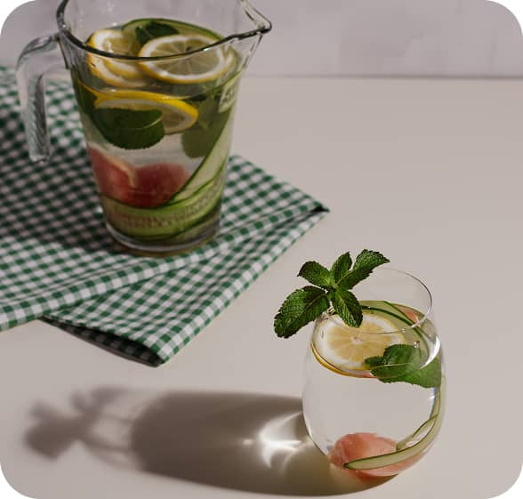
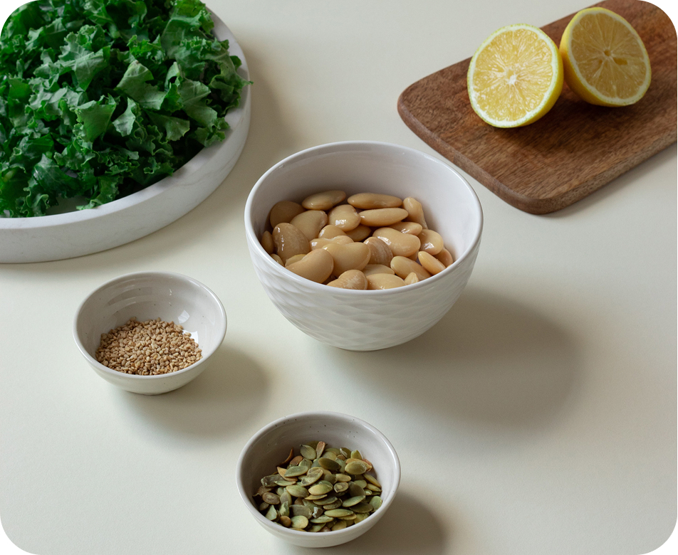
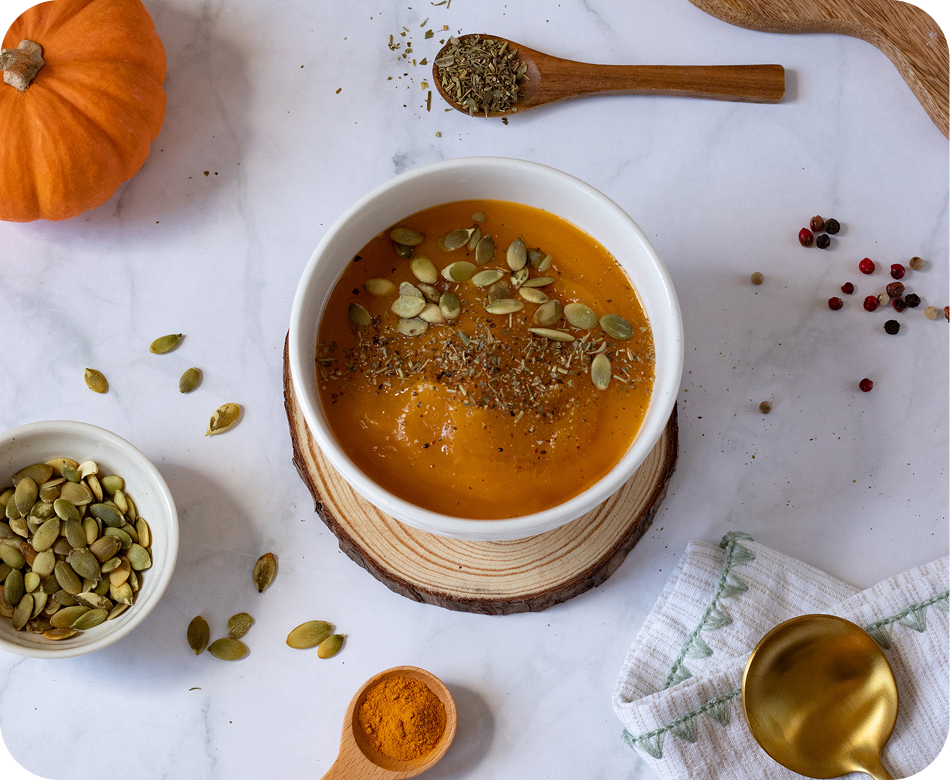
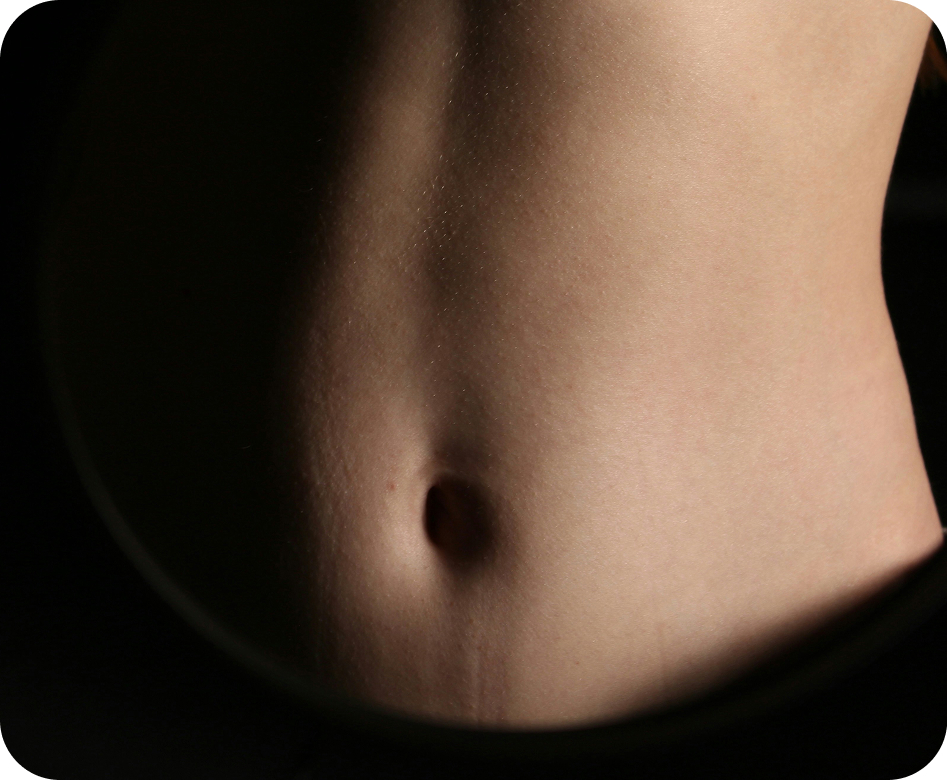
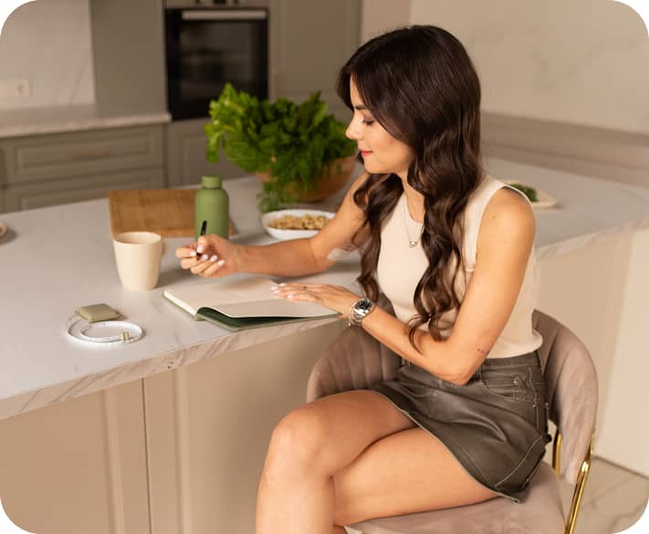

Отёки — это не просто эстетический вопрос, а сигнал о внутренних процессах организма. В этом чек-листе...
ЧИТАТЬ ДАЛЬШЕ

Отёки — это не просто эстетический вопрос, а сигнал о внутренних процессах организма. В этом чек-листе...
ЧИТАТЬ ДАЛЬШЕ
5 главных групп продуктов, из которых легко собрать сытный рацион без подсчёта калорий.
ЧИТАТЬ ДАЛЬШЕ
Эта статья — удобный конструктор. Он поможет тебе легко создавать сытный, сбалансированный рацион, сохраняя твой личный ритм и свободу выбора.
ЧИТАТЬ ДАЛЬШЕ
Отёки — это не просто эстетический вопрос, а сигнал о внутренних процессах организма. В этом чек-листе...
ЧИТАТЬ ДАЛЬШЕ
Состояние пищеварения влияет не только на ЖКТ, но и на уровень энергии, кожу, настроение и общее самочувствие...
ЧИТАТЬ ДАЛЬШЕПростое и сбалансированное меню, созданное для мягкой поддержки организма, восстановления энергии и...
ЧИТАТЬ ДАЛЬШЕОтёки — это не просто эстетический вопрос, а сигнал о внутренних процессах организма. В этом чек-листе...
ЧИТАТЬ ДАЛЬШЕСостояние пищеварения влияет не только на ЖКТ, но и на уровень энергии, кожу, настроение и общее самочувствие...
ЧИТАТЬ ДАЛЬШЕПростое и сбалансированное меню, созданное для мягкой поддержки организма, восстановления энергии и...
ЧИТАТЬ ДАЛЬШЕИдеи для ежедневного меню с опорой на твой ритм и привычки.
ЧИТАТЬ ДАЛЬШЕКак сочетать продукты и собирать сбалансированные приёмы пищи.
ЧИТАТЬ ДАЛЬШЕНебольшой гид по привычкам, которые поддерживают комфортное пищеварение.
ЧИТАТЬ ДАЛЬШЕПо этому запросу статьи не найдены.